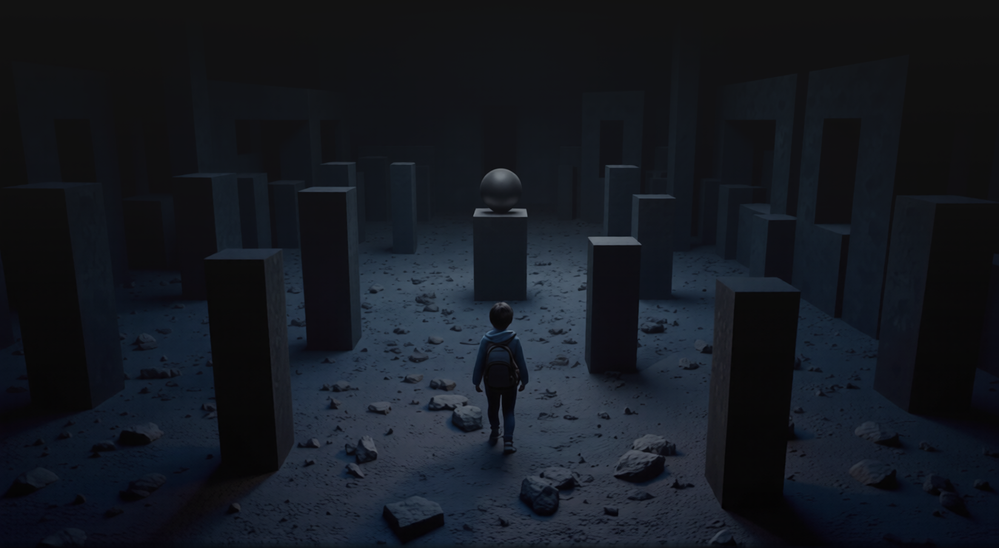
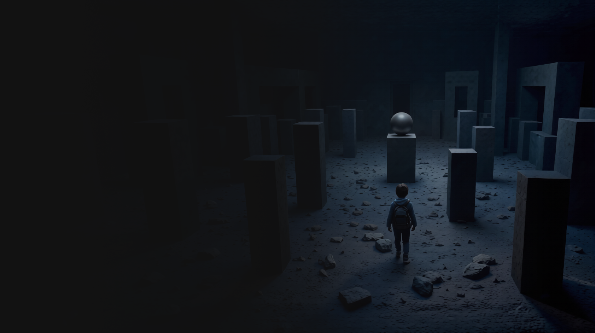
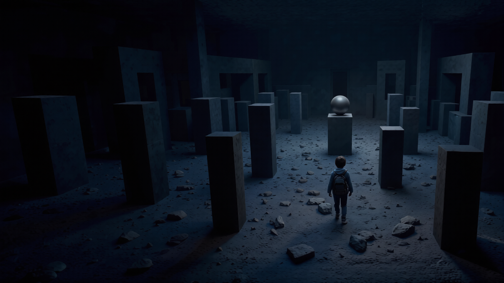

Desenvolvedor Web
CARLOS EDUARDO
Olá, mundo! Sou desenvolvedor web frontend, utilizando tecnologias como HTML, CSS e JavaScript no meu dia a dia. Também curso o 4º período de Engenharia de Software, onde continuo aprofundando meus conhecimentos.
Aqui no meu portifólio você vai encontrar todos os meu projetos já lançados, fique a vontade para explorar cada um deles.


